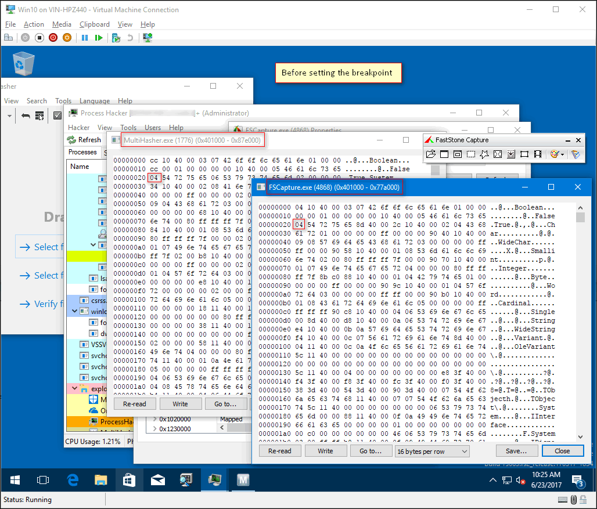
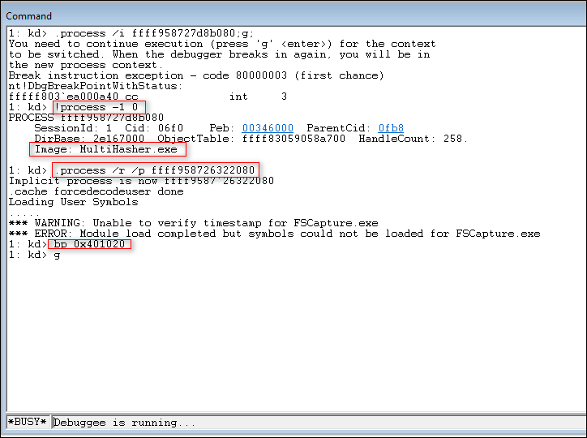
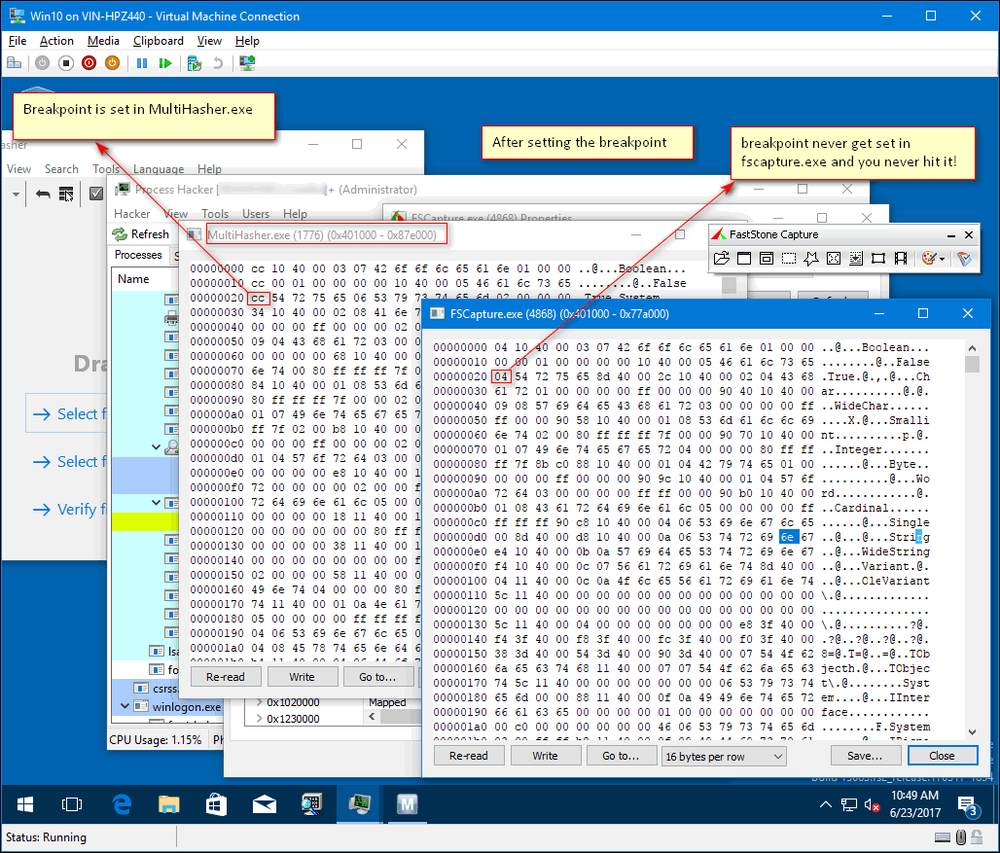
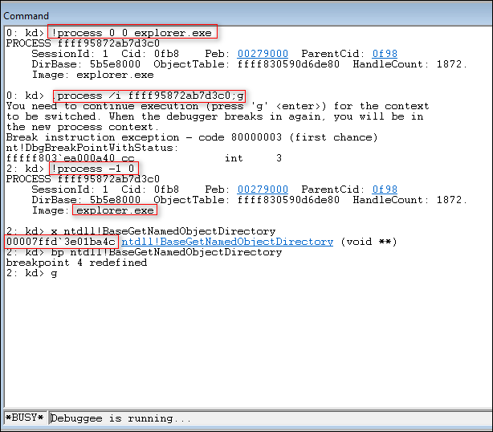
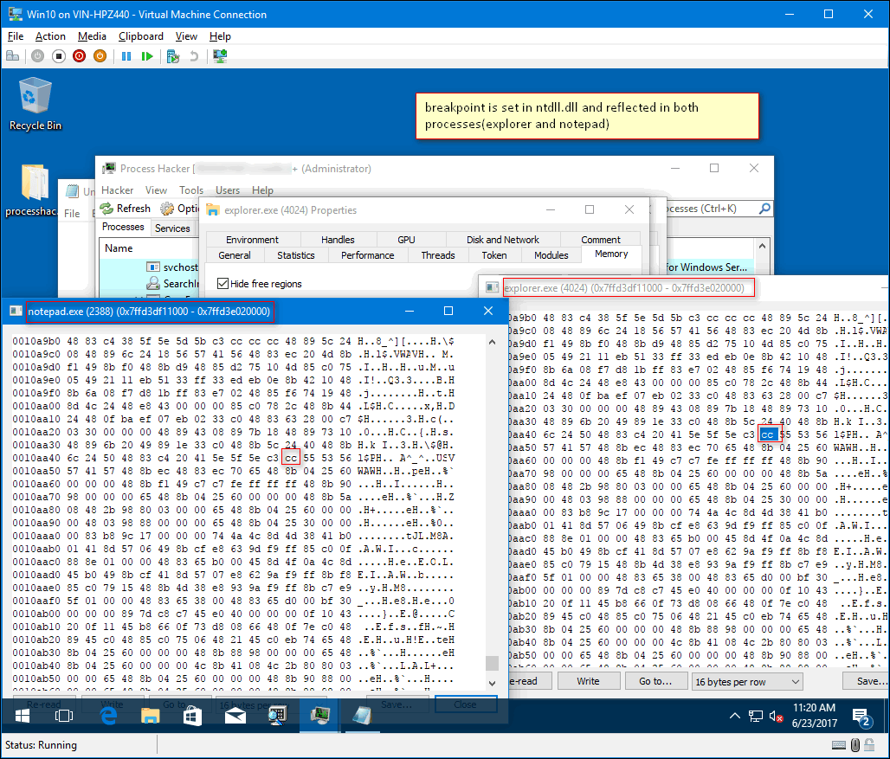

========================================================================
Setting user mode break points from KD aka .process /i vs .process /r /p
http://vineelkovvuri.com
========================================================================
0. Contents
1 - Introduction
2 - How do break points work in user mode debugging
3 - User mode break points from KD
4 - Setting breakpoints in system dlls
5 - References
1. Introduction
When performing KD(Kernel Debugging) in Windows with Windbg if you have to set a
break point in a user mode process we should always use .process /i address; g;
.reload /user. Lot of good content is written on the internet on this command,
but nothing seemed to explain why this command should be used instead of the
familiar .process /r /p address. I would like to shed some light on this. Before
reading any further I would strongly encourage you to read about it from above
link. In this article I assume some basic knowledge on how kernel debugging is
done with Windbg. Also, I would like to start with the following question.
If the debugger has read/write access to the user mode process via .process /r
/p why cannot it insert int 3 in user mode process when performing KD? Why do we
have to make the user mode process the current process context by running
.process /i ?
To explain this we need to quickly understand how break points work.
2. How do break points work in user mode debugging
Below are the steps involved for a break point to work in debugging a user mode process.
- bp address - you are just instructing the debugger to make a note of
"address" and replace the byte at that address with 0xcc (int 3) when
target resumes to execute
- g - when you hit "g" the debugger replaces the byte with 0xcc and stores
the original byte with it
- After execution when processor execute the modified byte (0xcc) this
causes the debugger to break in and debugger puts back the original byte
as if nothing has happened to the program
- More details:
http://vineelkovvuri.com/2016/09/04/how-does-breakpoints-work-in-debuggers/
3. User mode break points from KD
When debugging a user mode process from KD the steps works exactly same as above
but with a slight twist.
- Let's assume during KD, when the debugger broke, the processor is
executing a process named mulithasher.exe(see note below)
- When you switch the windbg's view to a different process(fscapture.exe) by
.process /r /p fscaptureaddress, you are not changing the underlying
execution of the processor. !process -1 0 still shows multihasher.exe
- With /r /p you now have read/write access to the fscapture process. This
confirms the first part of the question
- bp address - same as above, you are instructing the debugger to make a
note of "address" and replace the byte at that address with 0xcc (int 3)
when target resumes to execute
- when you hit "g" the debugger replaces the byte at address with 0xcc in
the currently executing process which happens to be multihasher.exe not
fscapture.exe!

Before break point getting updated

Setting the break point

After break point is updated
- This means, "g" command used to resume the target is the culprit(may be it
is by design). This answers the second part of the question
- So by using .process /i address;g; windbg will break under your process
context(how?). After which setting a break point and hitting "g" will
cause the debugger to actually put int 3 in your process not somewhere
else
NOTE: I initially made multihasher.exe the process context by using .process /i
multihasher address;g;
4. Setting breakpoints in system dlls
This .process /i is not required if you are putting breakpoints in system dlls
like kernelbase, ntdll etc because these dlls are loaded at the same virtual
address in all the user mode processes and they have a single copy in the
physical memory. So once a break point set in a process the break point is
visible in all other processes which uses that system dll. Below we illustrate
this by setting a break point in ntdll.dll. (Even here just make sure when you
broke initially you are not in System process as it will not have ntdll!)

Break point is set only in ntdll of explorer process

Break point set in ntdll of explorer gets reflected in ntdll of notepad also
5. References
- Analyst's Perspective: Analyzing User Mode State from a Kernel Connection|http://www.osronline.com/article.cfm?id=576
- How Windows Debuggers Work?|https://www.microsoftpressstore.com/articles/article.aspx?p=2201303&seqNum=2